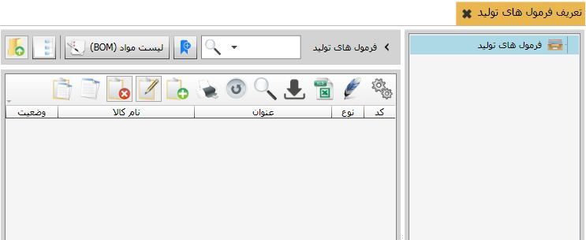
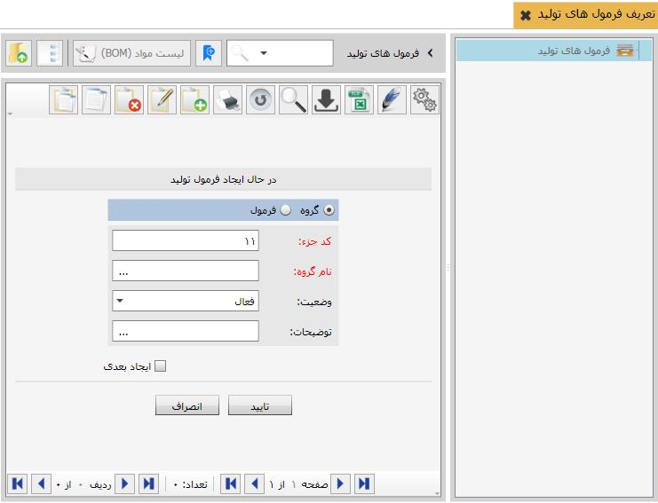
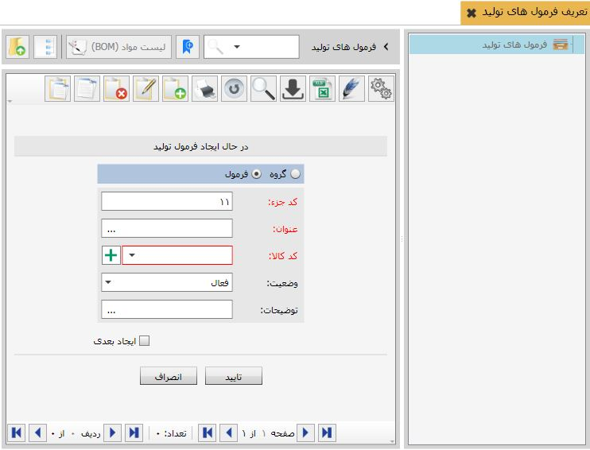
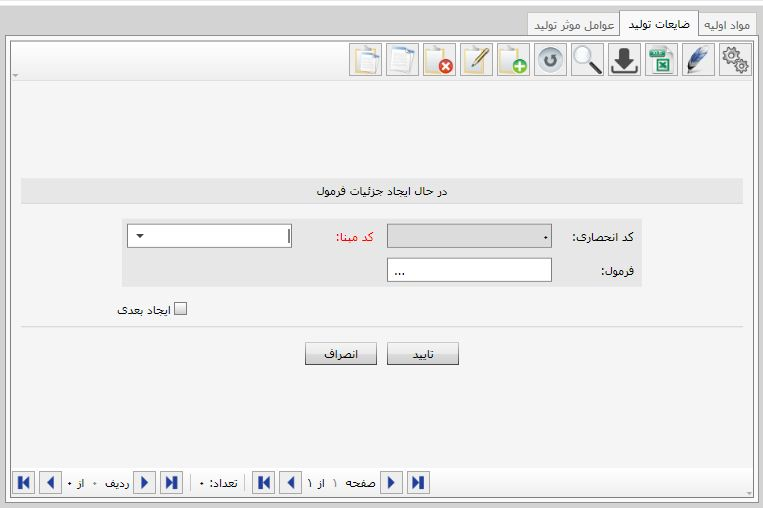
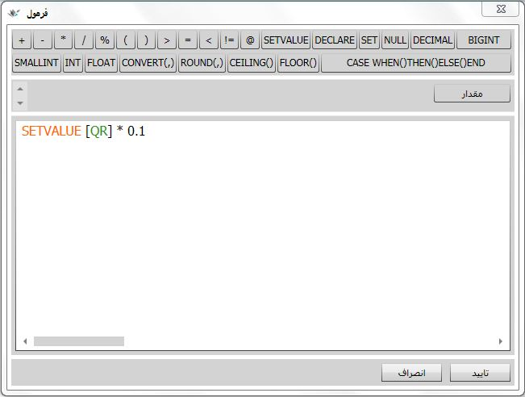
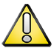
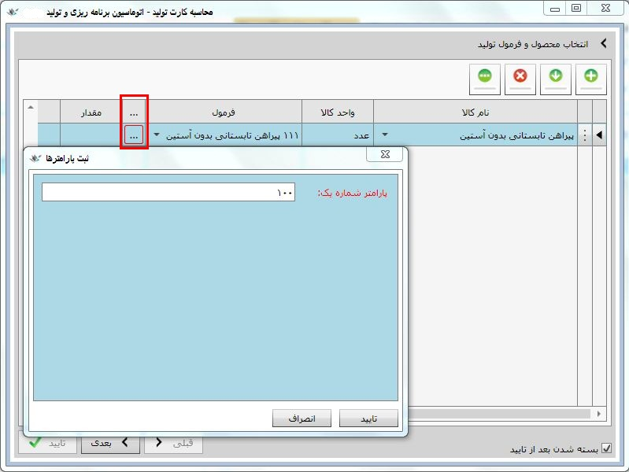
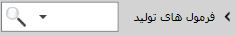

در این منو تمامی فرمول های مورد استفاده در هنگام صدور کارت تولید واقعی و استاندارد تعریف می شود. با کلیک بر روی این منو صفحه زیر باز می شود :
برای تعریف فرمول های تولید در این منو می توانید از گزینه اضافه استفاده کنید با زدن این گزینه صفحه تعرف فرمول تولید نمایش داده می شود .
صفحه تعریف فرمول تولید به صورت پیش فرض بر روی تعریف گروه تنظیم شده است که در صورت نیاز می توانید فرمول های تولید را گروه بندی نمائیدپس از وارد کردن نام گروه بر روی گزینه تایید کلیک کنید تا گروه فرمول مورد نظر تعریف گردد. در صورتی که میخواهید بدون تعرف گروه، مستقیما فرمول تولید تعرف نمائید می توانید گزینه فرمول را انتخاب نمائید که با انتخاب آن حالت صفحه تغییر می یابد شکل زیر این صفحه را نشان می دهد :
در شکل بالا با وارد کردن عنوان و کد کالا و کلیک بر روی گزینه تایید می توانید فرمول تولید مورد نظر را تعریف نمائید.
پس از تعریف فرمول های تولید باید لیست مواد(BOM) برای آن تعریف شود برای اینکار بروی فرمول قرار گرفته و سپس از قسمت بالایی صفحه گزینه لیست مواد(BOM) را انتخاب کنید با کلیک بر روی این گزینه صفحه زیر باز می شود.که یه دارای سه سربرگ می باشد :
1- مواد اولیه : در این قسمت تمامی مواد اولیه به ازای تولید یک واحد از محصول مورد استفاده قرار میگیرد تعریف می شود برای تعریف مواد اولیه و فرمول مقدار هر کدام بر روی گزینه اضافه کلیک کنید تا صفحه زیر نمایش داده شود :

در این صفحه کد انحصاری که به صورت غیر قابل تغییر از سمت نرم افزار تعریف می شود. در قسمت کد مبنا مواد اولیه مورد نیاز از بین کالاهای ثبت شده در قسمت اطلاعات مشترک و تنظیمات، منوی تعریف سرفصل کالاها انتخاب می شود . در قسمت فرمول مقدار مورد استفاده از این مواد برای تولید کالا تعریف می شود در شکل زیر نحوه تعریف فرمول نمایش داده می شود :

2- ضایعات تولید : در فرآیند تولید به طور معمول مقداری از مواد اولیه به ضایعات تبدیل می شود. برای محاسبه مقدار ضایعات تولید شده به ازای هر واحد از کالا باید در این قسمت تعریف شود. برای تعریف ضایعات و فرمول مقدار هر کدام بر روی گزینه اضافه کلیک کنید تا صفحه زیر نمایش داده شود :
در این صفحه کد انحصاری که به صورت غیر قابل تغییر از سمت نرم افزار تعریف می شود. در قسمت کد مبنا عنوان ضایعات بوجود آمده را از بین کالاهای ضایعات ثبت شده در قسمت اطلاعات مشترک و تنظیمات، منوی تعریف سرفصل کالاها انتخاب کنید. در قسمت فرمول مقدار، ضایعات به وجود آمده برای تولید کالا تعریف می شود در شکل زیر نحوه تعریف فرمول نمایش داده می شود :
3- عوامل موثر تولید : در این قسمت تماملی عواملی که ممکن است در هنگام تولید کالا بر روی آن تاثیر بگذارد تعریف می شود.مراحل تعریف و اضافه کردن این عوامل در شکل زیر نمایش داده شده است :

در این صفحه کد انحصاری که به صورت غیر قابل تغییر از سمت نرم افزار تعریف می شود. در قسمت کد مبنا عنوان عامل را از بین عوامل تعریف شده در منوی عوامل موثر در جریان تولید انتخاب کنید. در قسمت فرمول مقدار این عامل به ازای تولید یک واحد از محصول تعریف می شود در شکل زیر نحوه تعریف فرمول نمایش داده می شود :

 توجه داشته باشید برای مشاهده لیست عوامل موثر در هنگام تعریف ابتدا باید آن ها را در منوی عوامل موثر در جریان تولید تعریف نمائید.
 از این گزینه برای تعریف پارامتر برای فرمول های تعریف شده استفاده می شود پس از کلیک بر روی این گزینه صفحه تعریف پارامتر ها باز می شود برای تعریف بر روی گزینه اضافه کلیک کنید. صفحه زیر این منو را نمایش می دهد :
از این گزینه برای تعریف پارامتر برای فرمول های تعریف شده استفاده می شود پس از کلیک بر روی این گزینه صفحه تعریف پارامتر ها باز می شود برای تعریف بر روی گزینه اضافه کلیک کنید. صفحه زیر این منو را نمایش می دهد :

در این منو کد انحصاری که به صورت پیش فرض از سمت نرم افزار تعریف می شود در قسمت عنوان نام پارامتر مورد نظر را وارد کنید و در قسمت مقدار، مقدار پیش فرض برای این پارامتر را وارد نمائید سپس بر روی گزینه تایید کلیک نمائید تا پارامتر ایجاد شود. پس از ایجاد پارامتر می توان در هنگام صدور کارت تولید در قسمت سه نقطه، مقدار این پارامتر را تغییر داد یا سیستم به صورت پیش فرض مقدار وارد شده هنگام تعریف را قرار می دهد شکل زیر این صفحه را نشان می دهد:
 از این قسمت برای جست و جو در میان فرمول های تولید استفاده می شود.
 از این گزینه برای بازگشت به صفحه قبلی استفاده می شود.
از این گزینه برای بازگشت به صفحه قبلی استفاده می شود.